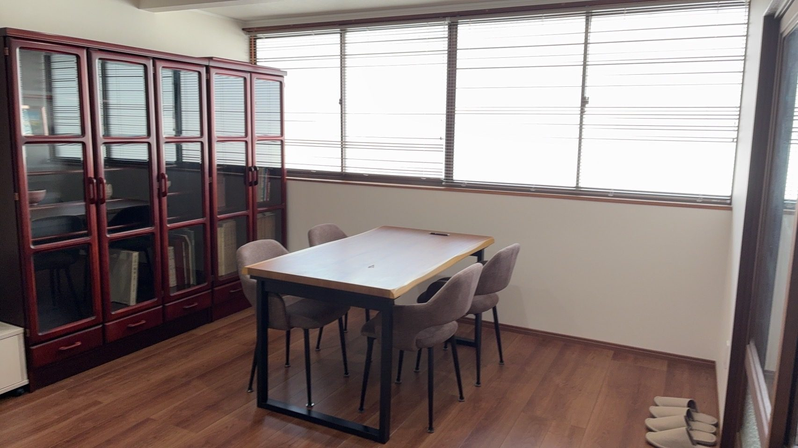

事務所案内
あなたの想いに寄り添う、相続・遺言の専門家です。

MESSAGE
ごあいさつ
はじめまして。多治見に生まれ、地元・多治見北高等学校を卒業し、椙山女学園大学卒業後すぐに宅地建物取引士を取得し、不動産売買・賃貸業に携わってまいりました。働きながら出産・育児を通じて、親族・友人・知人に支えていただき、多くの貴重な経験をさせて頂きました。
離婚後、この地で行政書士事務所を開所し、多種多様な行政書士業務の中で相続・遺言を中心にお仕事をさせていただいております。時に大切な人を亡くし、悲しみの中で手続きや書類を手配する苦しさも知っております。人生には別れがついて回ります。そんな時、お客様の声に耳を傾け寄り添って、少しでもその悲しみの中から光を見つけられるお手伝いが出来たらと思っております。
また、遺言という形で人生の最後を締めくくり、自分の人生の最後の言葉を後に続く方々へ想いを残すお手伝いができればとも思っております。
私一人では解決できない問題もありますが、パートナーの司法書士や税理士の先生とともに解決に導いて参ります。
わかりづらい法律や手続きのことも、できるだけわかりやすくご説明致します。お気軽にご相談ください。
代表 行政書士 高木 麻里
Our Values
私たちが大切にしていること
寄り添う心
不安なお気持ちにそっと寄り添い、最後まで親身にサポートします。
確かな専門性
相続・遺言を専門に研鑽を重ね、確実な手続きをご提供します。
分かりやすさ
専門用語を避け、納得いただけるまでていねいにご説明します。
Office Profile
事務所概要
| 事務所名 | 高木行政書士事務所 |
|---|---|
| 代表者 | 行政書士 高木 麻里（Mari Takagi） |
| 所在地 | 〒507-0814 岐阜県多治見市市之倉町6丁目23番地 |
| 電話番号 | 070-9511-3322 |
| メール | mari@takagi-gyosei.jp |
| 営業時間 | 平日 9:00〜18:00（土日は予約制） |
| 定休日 | 祝日（土日は予約制／ご予約のみ対応） |
| 取扱業務 | 遺言書作成サポート／相続手続き（名義変更・太陽光発電の名義変更を含む） ほか |
| 所属 | 岐阜県行政書士会 登録番号 第26202135号 |
| 連携・パートナー | CPS総合法務事務所（外部サイトへ）↗ |
Contact
まずは、お気軽にご相談ください
初回相談は無料です。おひとりで抱え込まず、どうぞお話をお聞かせください。
営業時間：平日 9:00〜18:00（土日は予約制）